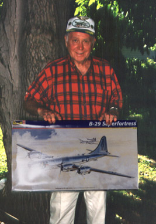

Monogram 1/48 B-29 Dragon Lady
Kit #5711
MSRP $43.98
Model, images and text Copyright © 2003 by Matt Swan

Shortly after moving to Sandusky I established myself with a local dentist as a result of a molar coming apart. During my visit to the dentist we talked about aircraft and World War Two aircraft in particular. Turns out that the dentist, at the tender young age of 18, was flying B-29’s off of Tinian during the war. Over the ensuing years Colonel Edward Soltez, retired USAAF, DDS and I became friends. When I acquired a copy of Monogram’s 1/48 scale B-29 I immediately wanted to reproduce Doc’s aircraft. That’s Doc Soltez holding the Monogram box just as we began this project. Unfortunately we could not find any photos of the nose art for his craft, The Island Princess (the nose art shown in Squadron's B-29 Superfortress in Action is a different aircraft) but his friend and fellow B-29 pilot flew a well-documented aircraft. The 2003 504/509 Bomb Group reunion in Annapolis was approaching so we decided to model his buddy’s aircraft. We began the process to surprise Alexander Theodorakis with a model of his bird, The Dragon Lady at the 2003 504/509 bomb group reunion.
First thing I needed was to get a copy of Aeromaster’s sheet #48-274 B-29s over Korea for the appropriate nose art. A quick trip to E-bay took care of that requirement. The construction of the model was pretty straight-forward with the only major exception being the massive quantities of lead sinkers and clay that I had to hide in every available space in the nose to keep it on the ground. I even packed lead sinkers and modeling clay into both forward gun turrets. Standard application of Future to all clear parts and masks with a combination of Black Magic masks and fine strips of masking tape for the gunners bubbles. Originally when I installed the antennae wire I ran it from the radio room straight to the top of the rudder. A few days later I realized my mistake and re-ran the line from the radio room to both aerial masts and then to the rudder so as you look at these pictures you may notice that difference.
The finish is all lacquer. The entire aircraft was painted with several coats of Krylon Gloss Black then the deicer boots were masked and it was given about three coats of Alclad 2 Aluminum. After this had cured for a day the control surfaces and a couple of body panels were masked and done with Alclad 2 Dark Aluminum.

The decals are mostly from the kit sheet with the nose art from the Aeromaster sheet. My research indicated that the Dragon Lady flying off of Tinian had the tail marking of “A box 41” but Doc insisted that I use the “Circle W” tail code. Since this was being made for them I was not going to argue the point. The tail markings are all painted on, or more appropriately, masked on. After the kit was done with the Krylon Gloss Black I used a common compass with a Xacto knife mounted in it to cut circles out of wide masking tape and thin strips to mask the “W”. Worked out pretty well.
I didn’t apply any weathering to the exterior as I wanted to present these guys with a factory new looking aircraft. I built a large crate from paneling and 1X2 furring strips, shot a bunch of foam insulation into the resulting box then laid a sheet of plastic overtop and set the model onto in to form a perfect impression. The lid was attached with Velcro strips and she was ready to drive to Annapolis. The reunion went off just great and everybody loved the model. Once she came back we took her to our local American Legion Post #83 and was put on permanent display in their large glass case.